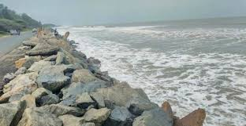

Uppada Beach
Uppada Beach is known for its scenic beauty and long stretch of golden sands. It is a favorite destination for beach lovers and offers a peaceful retreat away from the hustle and bustle of city life. The beach is ideal for picnics, swimming, and enjoying the natural beauty.
Location: Uppada, Kakinada, Andhra Pradesh, India
Activities: Swimming, beach walks, picnics, photography
Transportation: Easily accessible by road, located near major bus routes and the Kakinada railway station.